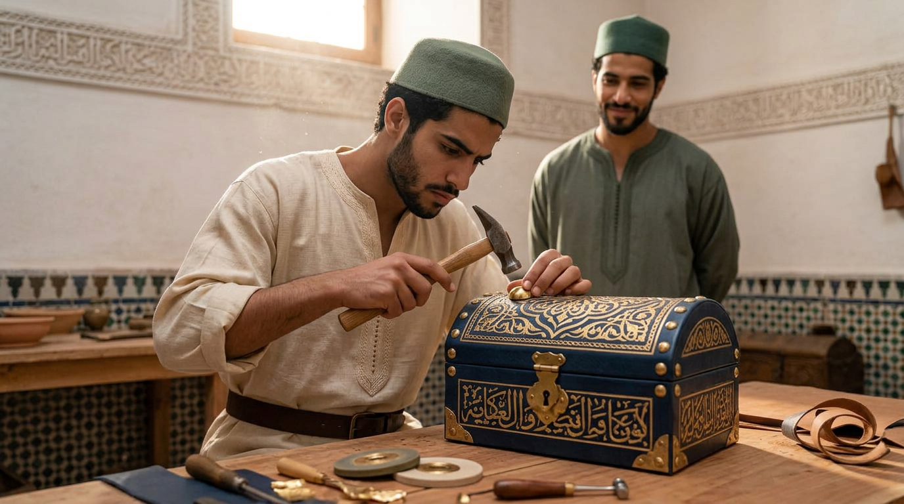
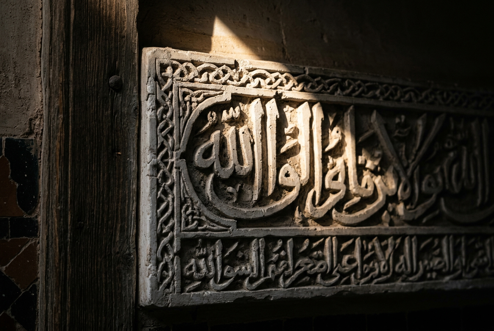

Support the project
What is given to a young man does not stop with him.

Riad Al-Uns does not yet exist. It is a precise vision, a place to be found, a community that has not begun. We are looking for those who can carry it through — not sponsors, but men and houses who understand that a culture is not preserved in a display case: it is passed on by hands, and hands are formed only with time and money.
WHAT IS BEING FUNDED
Men, before walls
One can restore a house in the medina and have saved nothing but a setting. What this project asks to be supported is not a building: it is what happens inside it, and what comes out of it.
The young men who enter Dar al-Hiraf will not remain there all their lives. They will learn a craft of the hand — calligraphy, zellige, plaster and mocárabe, weaving, wood, essences — and, with the craft, what makes it possible to hold: the discipline of the day, the word kept, loyalty towards the man working beside you, measure in the use of goods. Then they will leave.
They will leave to become what a formed man becomes: husbands able to keep a word given, fathers able to raise sons, craftsmen able to keep a workshop alive and to train others in turn, citizens useful to their city and faithful subjects of His Majesty the King of Morocco.
That is where the reach of a gift is measured: not by the number of square metres restored, but by the number of households still standing in twenty years because a young man received a craft and a character instead of leaving with nothing.
A CAUSE LARGER THAN THE HOUSE
The craftsmanship of the Kingdom
Moroccan art crafts are not disappearing for want of beauty or for want of buyers. They disappear when a maalem grows old without having found anyone to receive his knowledge — and that moment cannot be retrieved: a lost craft cannot be reconstituted from photographs.
Safeguarding this living heritage is a national cause, carried in Morocco by institutions, schools and associations whose place Dar al-Hiraf does not claim to take. The house brings what such efforts most often lack: duration. Not workshops of a few hours, but a common life in which the gesture is taken up again every day for years, until it becomes that malaka — the stable quality Ibn Khaldūn described — which no short course can give.
To support this house is therefore to support two things at once: men who are being formed, and a craftsmanship of the Kingdom that finds somewhere to continue.
HOW TO SUPPORT
Three commitments, according to each man's measure
I — THE PLACE
The acquisition
To find and acquire the dwelling. Without this first step, nothing these pages describe begins.
II — THE HAND
The restoration
To return the house to its proper state, with the right gestures and the right materials — the building site being itself the first school.
III — DURATION
The endowment fund
A capital whose fruits alone cover the ordinary life of the house, so that it never depends on next year's generosity.
Of these three commitments, the third is the least often understood and the most decisive. A house acquired and restored, but left without an endowment, lives as long as the enthusiasm lasts and closes when it fades. That is how most safeguarding projects die. The founding gift is not the one that pays for the walls: it is the one that guarantees that in fifty years the fire of the workshop will still be lit.
THE FORM OF THE PROPERTY
A property that can no longer be sold
The Kingdom has known for centuries the instrument suited to a foundation of this kind: the ḥubus — the waqf elsewhere in the lands of Islam. A property is thereby immobilised: it can no longer be sold, given, inherited or mortgaged, and its fruits are devoted in perpetuity to the purpose for which it was constituted. The madrasas, fountains and libraries of Fès lived on this for centuries, long after the death of those who founded them.
Riad Al-Uns intends to be established in this form, or in whatever form Moroccan law in force offers closest to it — the precise arrangements to be settled with competent counsel before any acquisition.
What this changes for whoever supports the house is simple, and it may be the essential point of this page. One is not endowing a project that could, in ten years, be sold on, turned into a guest house, or divided among heirs. One is endowing a thing that, by the very act founding it, cannot become one.
SUPPORTING ONE ELEMENT
One may also carry a single thing
Not everyone is in a position to found a house. One may support a precise, identifiable part of it, and then follow its life:
A maalem's year
The remuneration of a master of the craft for a full year of formation.
Setting up a workshop
The complete establishment of one of the six crafts — tools, benches, raw materials.
The formation of an apprentice
The path of a young man, from the first grade to mastery of his craft.
A tool, a loom
A lasting piece of equipment, which will serve successive generations of apprentices.
The matter of a work
The plaster, clay, wood or iron of a work of reception — the one a companion will leave in the walls at the end of his training. One does not endow the work: one endows its matter, and it will stay in the house. Al-Athar →
The sums attached to each of these commitments appear in the dossier, communicated after a first exchange.
WHAT IS GUARANTEED
What money will not change
A patron has the right to know not only what his gift will make possible, but what it can never bring about. With means grow the quality of the restoration, the number of crafts taught, the solidity of the endowment.
Never growing: the number of residents, the pace, the number of guests received. The house remains of human scale by construction, and not for lack of means. It will not become a hospitality establishment, will not turn into a museum, will not open a branch. These limits will be written into the deeds that govern the house, not left to the goodwill of the moment.
That is what the motto says, and it holds for those who give as well: “The riad is for its own, not its own for the riad.”
THE BENEFACTOR'S NAME
Inscribed, not displayed
In the cities of the Kingdom, the madrasas, the fountains, the hospitals and the libraries have for centuries borne the name of the man who founded them, carved in plaster or marble and followed by an invocation for his soul. This is not advertising: it is the way a community remembers its benefactors and goes on praying for them long after their death.

Riad Al-Uns will follow this usage. The patron whose generosity has made the house possible may see his name inscribed on a plaque at the entrance, in the language and the form he chooses, accompanied by the invocation of blessing that belongs to the one who gives — for instance:
تَقَبَّلَ اللهُ مِنْهُ وَجَزَاهُ خَيْرًا
“May God accept it from him and reward him with good.”
A workshop, a library, a fountain or an endowment may likewise bear a name — that of the donor, that of his father, that of someone departed whose memory he wishes to keep alive. And if the patron prefers otherwise, anonymity is complete: nothing is published without written consent, and the discreet gift has never been held to be the lesser one.
The account rendered
An annual statement of the use of funds and of progress, addressed personally.
The house open
To be received at the Riad, to see the workshops at work, to know the masters and those who are learning.
A place, not a rank
Futuwwa holds in both directions: the man who supports is received as an elder brother, not as a client.
WHAT DOES NOT CEASE
An alms that continues
A well-known hadith, reported by Muslim, teaches that when the son of Adam dies his works come to an end, save three: an alms that continues, a knowledge from which benefit is drawn, and a virtuous child who prays for him.
It is rare for a single foundation to bring the three together. This one does so by its very nature: the endowment is an alms that continues; the craft passed from a maalem to an apprentice is a knowledge from which benefit is drawn, and which will still be passed on when the man who funded it is gone; and the young men formed in this house are believers who pray — for their parents, for their masters, and for whoever made their formation possible.
That, more than any visible return, is what a patron acquires by carrying this project: not a good that is consumed, but a work that goes on bearing fruit after him.
ONE LIMIT, AND ONE ONLY
The name, yes — the direction, no
To honour a benefactor is a duty; to obey a funder is another, and the house will not contract it. A gift confers no say over the rule of the house, over the choice of masters, over the admission of residents, over the rhythm of the days or over the crafts taught. No sum, however considerable, buys an orientation.
This limit does not protect the house alone: it protects the gift itself. A foundation that bends its rule to suit those who fund it soon ceases to be what one had meant to support, and the benefactor finds he has paid for something else. What is promised here is that in thirty years the house will still be the one these pages describe.
A patron looking for a docile instrument will not find his business here, and it is better said at the beginning than at the end. One who seeks to bring into being something that exceeds him is at home.
FIRST STEP
Declare your availability
Nothing is decided on a website. This form commits you to no payment: it opens an exchange. The complete dossier — the place, the programme, the figures, the legal structure adopted and the timetable — is then sent, personally, to anyone who shows serious interest.
Any person, family, company or institution wishing to contribute to the continuity of this heritage is invited to make themselves known. Every message is read by the person responsible for the project, and by him alone.
DIRECT GIFT
Contribute online
Not every generosity is discussed around a table, and a house is not built with large gifts alone. For those who wish to contribute simply, from now, online giving is open.
Make a gift
Secure payment through Stripe — bank card, Apple Pay, Google Pay. No banking data is received or kept by the Riad.
At this stage the house does not yet exist. Gifts received today are assigned to the preparatory phase — search and study of the place, expert assessments, constitution of the structure that will carry the project — and are received by the European company that designs and coordinates the Riad. An account of their use is rendered each year to those who have given.
The amount is free: each gives to the measure of what he can and of what he judges right. The most modest gift is received with the same gratitude as the most considerable.
Make a giftFor regular support, month after month — the kind a house can truly count on — let us know: it is set up with you and may be interrupted at any moment, without justification.
For a substantial commitment — the acquisition, the restoration, the endowment — please do not use this payment form: write to us first. Such commitments are handled person to person, and by bank transfer.